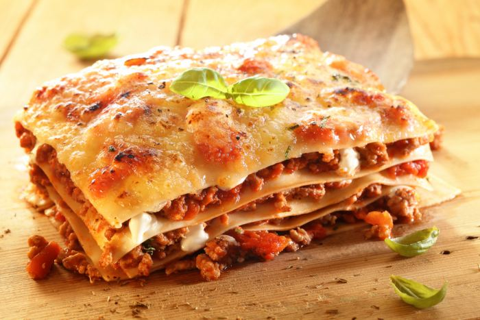

Pasticho Receta

Receta
Es un plato facil y sabroso de reparar, para fiestas o cualquier festividad
Es un platillo popular en todo el mundo por eso es importante conocer la correcta preparacion
Ingredientes
- Carne molida
- pasta precocida
- cebolla
- tomates
- ajo
- crema de leche
- mantequilla
pasos
- primero se cortan todos los vegetales y se sofrien
- se cocinan hasta dorar y luego se agrega la carne molida previamente aderezada
- una vez cocinado el relleno en otro sarte se agrega la mantequilla y la crema de leche
- se ponene a cocinar en agua las laminas de pasta
- una vez listo todo se arma el pasticho, primero las laminas seguido de la carne y luego la crema de leche,
se siguen estos pasos hasta armar el pasticho
- se mete al horno a 300 grados durante 120min
- Esperar que se enfrie y servir al gusto